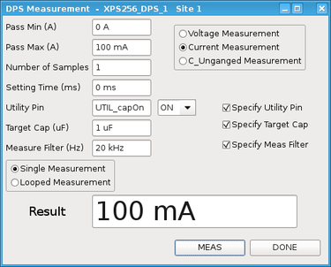
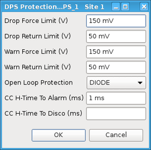
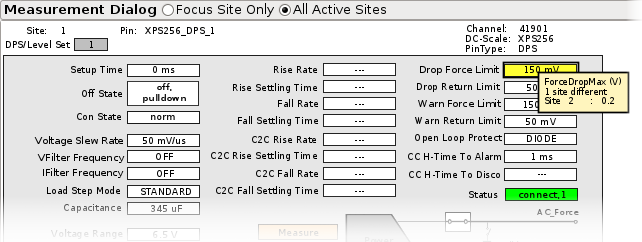
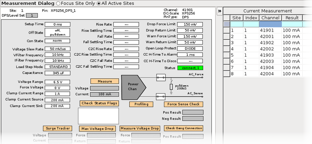

XPS256 programming - DPS operating mode
An XPS256 pin in the DPS operating mode can be programmed via level setups, APIs or SmartRDI.
Pin definition
An XPS256 pin is configured to operate in DPS operating mode if it is defined as a device power supply using the DPS Pins editor. As for all other DC Scale cards, the parameter Pol is to be set to POS.
Hardware view
Hardware view of XPS256 in DPS operating mode:

|
|
- Measure dialog and other sub‑dialogs
-
In the Measure dialog you cannot only set the standard parameters, but also switch a capacitance on the DUT board for the measurement.
The related utility pin, the target state of the pin, and the target capacitance can be defined in the Measure dialog:

Several other fields that are marked in white can be changed in several sub‑dialogs.
An example for the other sub‑dialogs is the DPS Protection dialog that allows you changing parameters such as the maximum voltage drop or the status of the internal force to sense connection, which is named Open Loop Protection:

See also the related information in the API overview of XPS256 programming - Measure currents.
- Site selection
- The XPS256 hardware view for the DPS operating offers at the top a selection for the sites to be set or displayed:
- Focus Site Only: Measured results are displayed only for the site in focus. Settings in fields marked in white that are changed in a sub‑dialog are applied only to the site in focus.
- All Active Sites: Measured results are displayed for all active sites. Settings in fields
marked in white that are changed in a sub‑dialog are applied to all active sites.
Settings that differ on the sites are highlighted in yellow. When you hover the cursor over such a field, the different settings are displayed in a tooltip.

- Multisite results table
If All Active Sites is activated and a measurement is triggered by on of the measure dialogs, the measurement is executed on all active sites and a table with all results opens on the right. The results table is available for measurements made using the Measure, Max Voltage Drop, Measure Voltage Drop, Force Sense Check, or Check Gang Connection buttons.

The result table shows the results of only the last measurement. You can sort the table by each column and also use a filter term in the top row marked in blue. The results can be exported as CSV file using the Export button on the hardware view toolbar.
Setup
We recommend programming the basic settings with the level setup and applying changes in the pattern‑based mode of SmartRDI or with DC events.Level setup overview
Force and clamp settings and the dynamic behavior of an XPS256 pin in the DPS operating mode are controlled by the level setup. To access all features of the card you must use equations. For details see the Equation based level setup and DPSPINS resources.
The following parameters are supported:
|
Connections and timing:
Current:
Constant current check:
|
Dynamic behavior:
Maximum voltage drop:
Other:
|
Voltage:
Voltage settling time:
|
Supported connection states, defined by DPSPINS resource connect_state:
- norm
- ungang
- himpNote The default value norm of DPS pin resource connect_state can be selected in the DPS Setup window of the Level setup tool and can be programmed by the related command PSLR but cannot be programmed explicitly in the level setup equations. The parameter connect_state must be omitted to define the default value norm in the level setup equations.
SmartRDI overview
The complete functionality to set up an XPS256 pin in the DPS operating mode is covered by the dc() API of SmartRDI. Both the code‑based mode and the pattern‑based mode are supported. For more information refer to Setting up DC Scale pins with SmartRDI and the related member functions of the dc() API.
API overview
Voltage or current measurements of an XPS256 pin in the DPS operating mode are covered by API DPS_TASK.
Pattern‑based setups and measurements are supported by the DC events. For the maximum pattern frequency, refer also to Minimum period / maximum frequency of the sequencer.
Functional changes
- Introduced in SmarTest 7.10.1
- SmarTest 7.10.3: Hardware view improved by site selection and multisite results table.